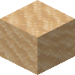
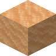
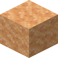
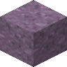
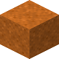
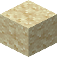

#supplementaries:hourglass_sands
物品标签 · 10 个已收录成员 · 另有 3 个未收录 id
标签成员 (10)

干燥沙子atmospheric:arid_sand

干燥红沙atmospheric:red_arid_sand可疑的干燥沙子
atmospheric:suspicious_arid_sand

可疑的干燥红沙atmospheric:suspicious_red_arid_sand

暮光沙eternal_starlight:twilight_sand
 粉沙
粉沙natures_spirit:pink_sand
 沙土
沙土natures_spirit:sandy_soil
 沙子
沙子minecraft:sand

红沙minecraft:red_sand

可疑的沙子minecraft:suspicious_sand
使用该标签的配方
无
未收录条目 (3)
thermal:sawdust_blockinfernalexp:glowdust_sandcreate:limesand